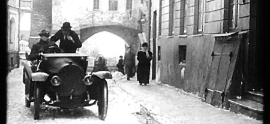
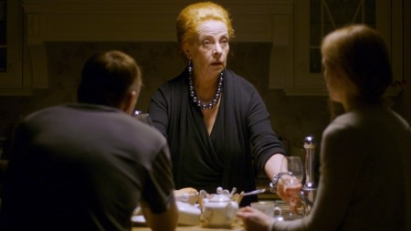

E
21 märts
19:00

“Laenatud naene” elava muusikaga
Elektriteatri viienda sünnipäeva puhul näitame märtsis kõigi seansside ette eeskava asemel Eesti kõige vanemat komöödiat pealkirjaga “Laenatud naene”. Tummfilmi saadab klaveril pianist Jorma Toots. Nii saab ka tänane publik osa vanade kinode hõngust, kus film ja elav muusika käisid käsikäes. “Laenatud naene” on tõenäoliselt 1913. aastal Tallinnas filmitud 12-minutiline komöödia
Riik
Eesti
Režissöör
Kenneth Branagh
Pikkus
242 min
English friendly
E
21 märts
19:00

Perekonnavaled
Perekonnavaled
Filmi tegevus toimub linnas, kus on professionaalne sümfooniaorkester, mille eesotsas seisab autoritaarne ja kindla käega dirigent Paul Levald, kes on juba aastaid ohjanud nii orkestrit kui ka suhteid peres. Dramaatiliste sündmuste tõttu tuleb Pauli tütremehel Egon Reil ootamatult juhtimine üle võtta. Lisaks orkestrisisestele pingetele pärandab äi Egonile koos dirigendikepi, võimu ja vastutusega ka oma keerulise minevikuga seotud saladused ja kohustused. Vanadest valedest kasvavad välja uued ning ühel hetkel Egon mõistab, et tõe väljatulek tooks kaasa tõelise kaose.
Režissöör
Manfred Vainokivi, Valentin Kuik
Riik
Eesti
Pikkus
82 min
Külas režissöör-stsenarist Valentin Kuik, näitleja Jaanika Arum